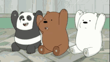

Several experience that i want to share to all of you.

I start working after i had completed my high school. I working as a waiter at a food stall that was located beside the mosque. I worked there for about 3 month in total. Before I further my study at UiTM Machang I worked for 1 month and for the next 2 month I worked there during my semester 1 and 2 break. I enjoy working there because of the treatment that I received by my employer. They were really supportive in helping me adapt to this working environment. Below is the picture of the stall that I have been worked for:

Here are several awards that I received during my time in elementary and high school.
| ELEMENTARY SCHOOL | |
|---|---|
| CEMERLANG DALAM DARJAH 6 BESTARI TEMPAT KEDUA | CEMERLANG AKHLAK TAHAP 2 |

| SECONDARY SCHOOL | |
|---|---|
| ANUGERAH AKADEMIK SPM PENIGKATAN BESTARI 2018 | ANUGERAH AKADMIK SPM TERBAIK MATA PELAJARAN SAINS KOMPUTER 2018 |

The most unforgettable experience that I had was 2 years ago, when I met my grandfather after 12 years of not seeing each other.